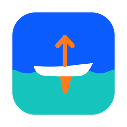
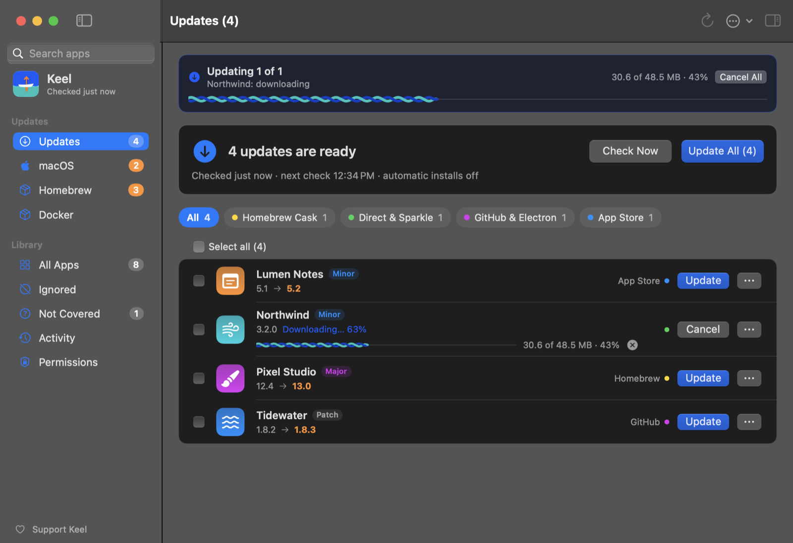

Keel
Keeps the apps on your Mac up to date, and checks every download before it installs it.
Download KeelVersion 1.4.8 · November 2026 · macOS 14 or later

The Updates page, with example apps.
Install
- Unzip Keel-latest.zip and move Keel.app to your Applications folder.
- Open Keel. The first time, macOS stops it because Keel isn't notarized by Apple yet: open System Settings › Privacy & Security, scroll down and click Open Anyway next to the message about Keel, then confirm.
- Turn on App Management so Keel can replace apps when it updates them: System Settings › Privacy & Security › App Management, turn on Keel (or click + and choose Keel from Applications).
Keel updates itself after that.
Feedback
Found a problem or have an idea? In Keel, Help › Send Feedback… opens a bug report with your Keel and macOS versions filled in. Keel sends nothing itself.
Support Keel
Keel is free. A star on GitHub helps more people find it.